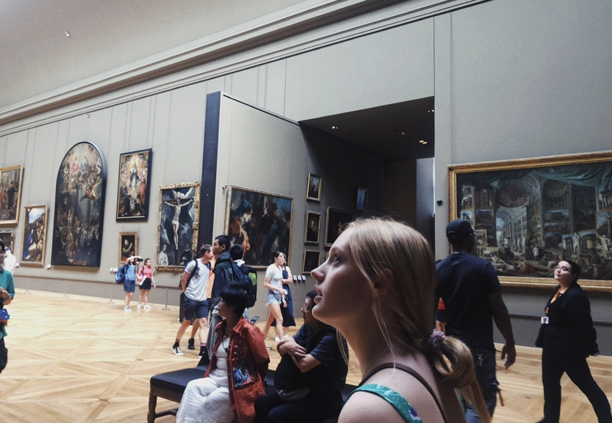

The second I landed in Paris I had butterflies. I always wanted to go to Paris, and this was finally a dream come true. I remember getting off the plane in Paris from Ireland feeling so content. We took a taxi to our hotel and unpacked our bags. From there, we immediately went out and started exploring. This summer there was a massive heat wave, but we got there just as the weather was settling down. It was so beautiful outside. The Tour de France was happening that week, so a lot of the roads were closed. We immediately got croissants. I had never tasted anything so delicious. We got one every morning the whole trip.
The eiffel tower was our main location where we hung out. Bronwyn and I went to the Eiffel Tower every night for a late night picnic. We met so many tourists on the lawn in front of the tower. Two girls we met are Anna Louis and April. We met up with them for a few days. They were 2 years older than us and from England, and they were visiting Paris for the week. Some other sites we saw were the Musee du Louvre, Musee D’Orsay, Avenues des Champs-Elysées, and more. We took a boat tour of the Seine and saw the Notre Dame Cathedral, even though it just recently went through a heartbreaking fire.